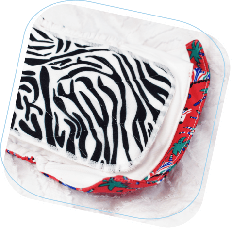
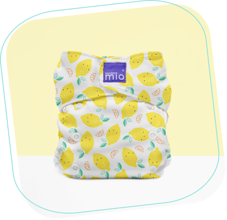

- atkārtoti lietojamie autiņi
- draudzīgs bērnam
- draudzīgs videi
- draudzīgs makam
hehe Viss, kas jums jāzina, lai sāktu ceļojumu ar auduma autiņiem.
Kas ir autiņu bambinomio auduma autiņi?
Auduma autiņi ir autiņi, kurus neizmetat. Tie ir paredzēti atkārtotai izmantošanai un ir izgatavoti no īpaši
mīksta auduma, nevis plastmasas, ko var atrast vienreizējās lietošanas autiņos. Auduma autiņbiksītes var saukt
par dažādām lietām, piemēram, “atkārtoti lietojamām autiņbiksītēm” vai “mazgājamām autiņbiksītēm”, taču tas viss
nozīmē vienu un to pašu!

Kāpēc izvelēties tieši bambinomio autiņus?
Arvien vairāk vecāku izvēlas bērnam izmantot auduma autiņbiksītes. Mūsu autiņi jūtas labāk: labāki gan
pakaļiem, gan kabatai un arī mūsu planētai. Mūsu produkti ir brīnišķīgi, var ietaupīt naudu, ir draudzīgi
planētai un arī izskatās ļoti jauki!
Kā tie strādā?
Auduma autiņi darbojas tieši tāpat kā citi autiņi. Vienīgā atšķirība ir tāda, ka, mainot laiku, nomainiet
autiņu veļas mazgāšanas dienai, nevis izmetiet to. Tos ir viegli lietot, un ir daži soli pa solim padomi, ar
kuriem mēs dalīsimies ar jums, lai palīdzētu izmantot mūsu produktus, kad sākat ceļojumu ar auduma
autiņbiksītēm.

Kas jums ir nepieciešams?
Nepieciešamais ir atkarīgs no tā, vai plānojat būt pilna vai nepilna laika auduma autiņu lietotājs. Sākumā mēs
iesakām jums pietikt ar autiņbiksītēm 2 dienu autiņbiksīšu nomaiņas vērtībā, lai jums būtu pietiekami daudz
autiņu, ko lietot, kamēr citi mazgājas, žāvē un ir gatavi lietošanai vēlreiz! Mēs arī iesakām pirms mazgāšanas
izvēlēties vietu, kur uzglabāt netīros autiņus. Un neaizmirstiet, ka jums būs nepieciešama jūsu veļas mašīna!